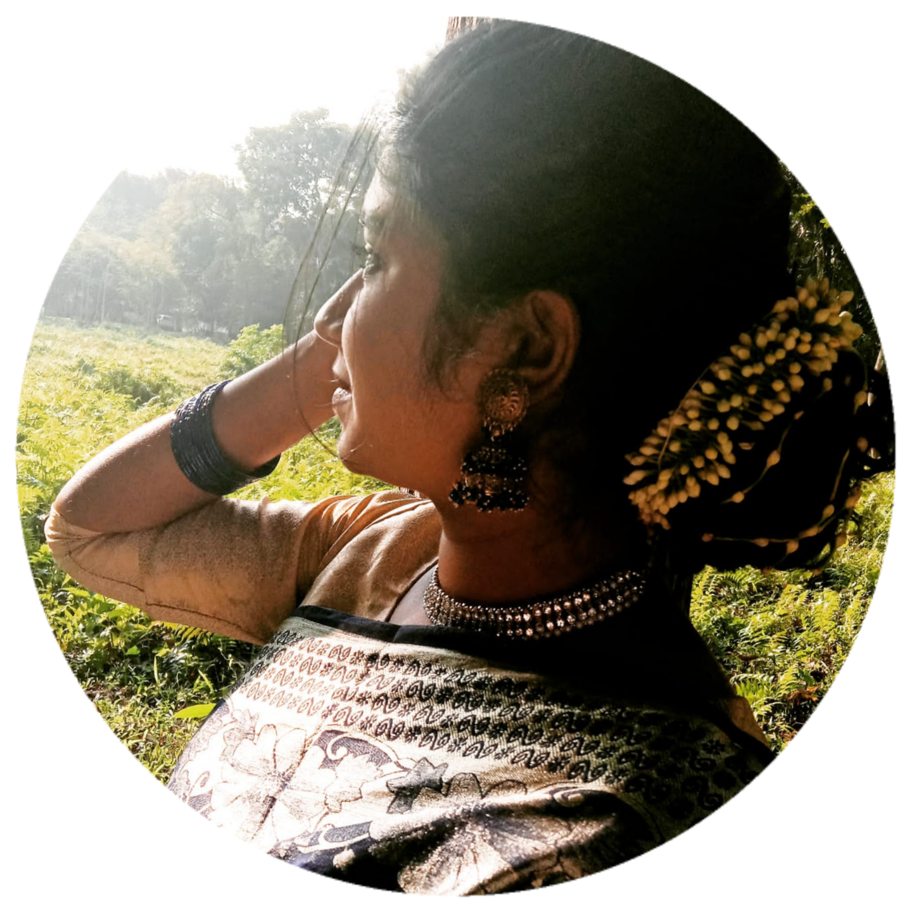

NAME:
DATE OF BIRTH:
BLOOD GROUP:
A short poem written by Abir:
প্রতিটি দিনের শেষ প্রান্তে এসে বসে একাকিত্বের মেলা,,সুখ সুখ করে খুঁজে ফিরি তবু মেলেনি তার দেখা🖤আর তা-ই দু:খ বিলাস আজ বড়ো আপন।।
আকাশ সমান অভিমান নিয়ে অজানা সেই বসন্তের খোজে আজও ঘুরে বেরাই উম্নাদ হয়ে🙂🥀
My opinion about Abir:
Abir is my best friend. Of course Abir is much better, a little fickle. Abir can mix with everyone very quickly. Abir is steadfast in his dream. Abir is very good at arranging his work. Abir loves to do his own thing. Moreover, Abir is very honest.

NAME:
DATE OF BIRTH:
BLOOD GROUP:
A short poem written by Tonu:
নির্জন সেই রাস্তায় আজও আমি হেঁটে যাই নিঃসঙ্গ ভাবে...
অতীত এর সেই স্মৃতি গুলো চোখের সামনে ভেসে উঠে প্রতিটি পায়ের স্পন্দনে।।🖤🥀
আজও সব তেমনই আছে আগের মতো শুধু নেই সেই মানুষগুলো,,,...🙂
তাই আজও আমি হেঁটে যাই সেই রাস্তায় নিঃসঙ্গ ভাবে🙂🖤🥀
My opinion about Tonu:
Tonu is a very good girl. Tonu is as good as a girl and as good as a friend. Tonu is very honest. As a friend Tonu can solve everyone's problems. Besides, all friends love Tonu very much. But Tonu is very indifferent to her own. She cannot decide what she should do or not do.